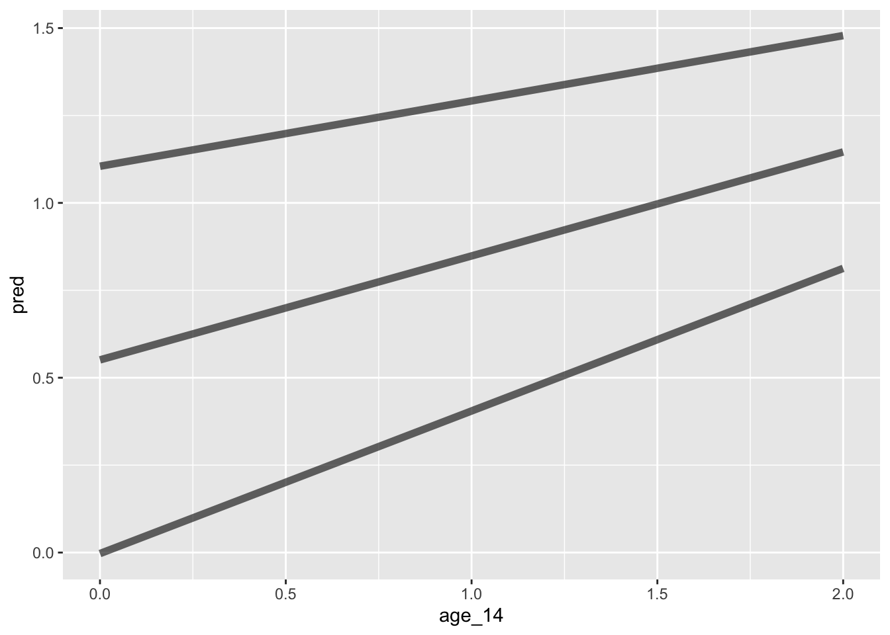
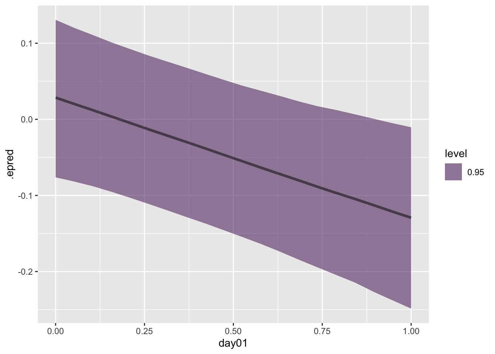

We are now going to introduce predictors to our growth models beyond time. These predictors are similar to predictors in standard regression – dummy for nominal, interactions change lower order terms, etcetera.
This is all just regression, so the same interpretation is the same. It is now only harder because we have multiple levels and lots of potential for interactions
Level 2 group predictors
Do groups differ in their initial status? Level 2, person variable that is dummy coded. Note that group here only is measured once, it is a between person variable.
Notice we have a new gamma term, \(\gamma_{01}\). How do we interpret this new fixed effect, especially in the presence of other fixed effects?
\(\gamma_{00}\) is the intercept and can be considered the value when G = 0 and time = 0, whereas the \(\gamma_{01}\) is the difference in initial values between groups.
The value for group = 1? \(\gamma_{00} + \gamma_{01}\)
One thing to keep in mind is that we are now changing the meaning of the random effect. Now that we have a predictor in the model, the \(U_{0j}\) is the person specific deviation from the group predicted intercept, not the grand mean intercept.
Understanding how to re-write the equation will help for calculating estimated scores for your predictors in addition to being able to interpret the coefficients.
Estimated value for an individual in group = 0 \[\hat{Y}_{ti} = (\gamma_{00} + U_{0i} ) + [(\gamma_{10}+ U_{1i})(Time_{ti})]\] group = 1 individual \[\hat{Y}_{ti} = (\gamma_{00} + \gamma_{01}+ U_{0i} ) + [(\gamma_{10}+ U_{1i})(Time_{ti})]\]
We can also create group mean estimated trajectories
Similar to before, the interpretation of \(U_{1i}\) changes. The term is now what is left over after accounting for group differences in the mean slope.
Notice that when we combine Level 1 and Level 2, the slope effect predictor becomes an interaction with time. Anytime you have a predictor of time that will be an interaction with time in that we are asking does group status (or what ever variable) differs in their relationship between time and your DV.
Linear mixed model fit by REML ['lmerMod']
Formula: alcuse ~ age_14 + (age_14 | id)
Data: alcohol
REML criterion at convergence: 643.2
Scaled residuals:
Min 1Q Median 3Q Max
-2.48287 -0.37933 -0.07858 0.38876 2.49284
Random effects:
Groups Name Variance Std.Dev. Corr
id (Intercept) 0.6355 0.7972
age_14 0.1552 0.3939 -0.23
Residual 0.3373 0.5808
Number of obs: 246, groups: id, 82
Fixed effects:
Estimate Std. Error t value
(Intercept) 0.65130 0.10573 6.160
age_14 0.27065 0.06284 4.307
Correlation of Fixed Effects:
(Intr)
age_14 -0.441
Code
fit2 <-lmer(alcuse ~ age_14 + male + (age_14 | id), data = alcohol)summary(fit2)
Linear mixed model fit by REML ['lmerMod']
Formula: alcuse ~ age_14 + male + (age_14 | id)
Data: alcohol
REML criterion at convergence: 644.6
Scaled residuals:
Min 1Q Median 3Q Max
-2.48295 -0.38330 -0.07969 0.38766 2.49001
Random effects:
Groups Name Variance Std.Dev. Corr
id (Intercept) 0.6482 0.8051
age_14 0.1552 0.3939 -0.23
Residual 0.3373 0.5808
Number of obs: 246, groups: id, 82
Fixed effects:
Estimate Std. Error t value
(Intercept) 0.63375 0.14459 4.383
age_14 0.27065 0.06284 4.307
male 0.03427 0.19103 0.179
Correlation of Fixed Effects:
(Intr) age_14
age_14 -0.326
male -0.677 0.000
Code
fit3 <-lmer(alcuse ~ age_14 * male + (age_14 | id), data = alcohol)summary(fit3)
Linear mixed model fit by REML ['lmerMod']
Formula: alcuse ~ age_14 * male + (age_14 | id)
Data: alcohol
REML criterion at convergence: 641.4
Scaled residuals:
Min 1Q Median 3Q Max
-2.4830 -0.4562 -0.1830 0.3548 2.3953
Random effects:
Groups Name Variance Std.Dev. Corr
id (Intercept) 0.6383 0.7989
age_14 0.1374 0.3707 -0.20
Residual 0.3373 0.5808
Number of obs: 246, groups: id, 82
Fixed effects:
Estimate Std. Error t value
(Intercept) 0.74562 0.15161 4.918
age_14 0.12129 0.08747 1.387
male -0.18415 0.21184 -0.869
age_14:male 0.29161 0.12223 2.386
Correlation of Fixed Effects:
(Intr) age_14 male
age_14 -0.432
male -0.716 0.309
age_14:male 0.309 -0.716 -0.432
Uncertainty intervals (equal-tailed) and p-values (two-tailed) computed
using a Wald t-distribution approximation. Uncertainty intervals for
random effect variances computed using a Wald z-distribution
approximation.
Code
library(modelr)
Attaching package: 'modelr'
The following objects are masked from 'package:performance':
mae, mse, rmse
Code
alcohol %>%data_grid(age_14 =seq_range(age_14, n =5), male, .model = alcohol)
Uncertainty intervals (equal-tailed) and p-values (two-tailed) computed
using a Wald t-distribution approximation. Uncertainty intervals for
random effect variances computed using a Wald z-distribution
approximation.
Plotting
library(report)alcohol %>%report_sample()
# Descriptive Statistics
Variable | Summary
---------------------------------
Mean X (SD) | 123.50 (71.16)
Mean id (SD) | 41.50 (23.72)
Mean age (SD) | 15.00 (0.82)
Mean coa (SD) | 0.45 (0.50)
Mean male (SD) | 0.51 (0.50)
Mean age_14 (SD) | 1.00 (0.82)
Mean alcuse (SD) | 0.92 (1.06)
Mean peer (SD) | 1.02 (0.73)
Mean cpeer (SD) | -0.00 (0.73)
Mean ccoa (SD) | 0.00 (0.50)
alcohol %>%data_grid(age_14 =seq_range(age_14, n =5), cpeer =c(-.73,0,.73), .model = alcohol) %>%add_predictions(fit6) %>%ggplot(aes(y = pred, x = age_14, group = cpeer)) +geom_line(alpha = .6, size =2)

Multiple predictors
Interpretations with multiple predictors in regression extend to MLMs. For example, health across time, examining the effects of an intervention, while controlling for initial exercise status?:
The strategy for including predictors is similar to working with a level 2 mlm equation. Do you want to predict the intercept or the slope? No need to explicitly model an interaction as that is implied.
Code
library(lavaan)
This is lavaan 0.6-19
lavaan is FREE software! Please report any bugs.
Code
sem.1<-' i =~ 1*alcuse_14 + 1*alcuse_15 + 1*alcuse_16 s =~ 0*alcuse_14 + 1*alcuse_15 + 2*alcuse_16# regressions i ~ male s ~ male'fit.1<-growth(sem.1, data = alcohol.wide)summary(fit.1)
lavaan 0.6-19 ended normally after 27 iterations
Estimator ML
Optimization method NLMINB
Number of model parameters 10
Number of observations 82
Model Test User Model:
Test statistic 4.213
Degrees of freedom 2
P-value (Chi-square) 0.122
Parameter Estimates:
Standard errors Standard
Information Expected
Information saturated (h1) model Structured
Latent Variables:
Estimate Std.Err z-value P(>|z|)
i =~
alcuse_14 1.000
alcuse_15 1.000
alcuse_16 1.000
s =~
alcuse_14 0.000
alcuse_15 1.000
alcuse_16 2.000
Regressions:
Estimate Std.Err z-value P(>|z|)
i ~
male -0.110 0.206 -0.534 0.594
s ~
male 0.272 0.120 2.261 0.024
Covariances:
Estimate Std.Err z-value P(>|z|)
.i ~~
.s -0.173 0.098 -1.762 0.078
Intercepts:
Estimate Std.Err z-value P(>|z|)
.i 0.692 0.147 4.701 0.000
.s 0.136 0.086 1.575 0.115
Variances:
Estimate Std.Err z-value P(>|z|)
.alcuse_14 0.080 0.147 0.546 0.585
.alcuse_15 0.432 0.095 4.537 0.000
.alcuse_16 0.216 0.175 1.236 0.216
.i 0.789 0.191 4.127 0.000
.s 0.225 0.082 2.749 0.006
Code
library(lavaan)sem.2<-' i =~ 1*alcuse_14 + 1*alcuse_15 + 1*alcuse_16 s =~ 0*alcuse_14 + 1*alcuse_15 + 2*alcuse_16# regressions i ~ peer s ~ peer'fit.2<-growth(sem.2, data = alcohol.wide)summary(fit.2)
lavaan 0.6-19 ended normally after 24 iterations
Estimator ML
Optimization method NLMINB
Number of model parameters 10
Number of observations 82
Model Test User Model:
Test statistic 2.406
Degrees of freedom 2
P-value (Chi-square) 0.300
Parameter Estimates:
Standard errors Standard
Information Expected
Information saturated (h1) model Structured
Latent Variables:
Estimate Std.Err z-value P(>|z|)
i =~
alcuse_14 1.000
alcuse_15 1.000
alcuse_16 1.000
s =~
alcuse_14 0.000
alcuse_15 1.000
alcuse_16 2.000
Regressions:
Estimate Std.Err z-value P(>|z|)
i ~
peer 0.736 0.117 6.288 0.000
s ~
peer -0.139 0.084 -1.656 0.098
Covariances:
Estimate Std.Err z-value P(>|z|)
.i ~~
.s -0.075 0.082 -0.912 0.362
Intercepts:
Estimate Std.Err z-value P(>|z|)
.i -0.108 0.146 -0.735 0.462
.s 0.418 0.105 3.978 0.000
Variances:
Estimate Std.Err z-value P(>|z|)
.alcuse_14 0.175 0.124 1.416 0.157
.alcuse_15 0.375 0.083 4.529 0.000
.alcuse_16 0.349 0.175 1.990 0.047
.i 0.430 0.138 3.114 0.002
.s 0.177 0.076 2.312 0.021
centered predictors
Code
sem.3<-' i =~ 1*alcuse_14 + 1*alcuse_15 + 1*alcuse_16 s =~ 0*alcuse_14 + 1*alcuse_15 + 2*alcuse_16# regressions i ~ cpeer s ~ cpeer'fit.3<-growth(sem.3, data = alcohol.wide)summary(fit.3)
lavaan 0.6-19 ended normally after 24 iterations
Estimator ML
Optimization method NLMINB
Number of model parameters 10
Number of observations 82
Model Test User Model:
Test statistic 2.406
Degrees of freedom 2
P-value (Chi-square) 0.300
Parameter Estimates:
Standard errors Standard
Information Expected
Information saturated (h1) model Structured
Latent Variables:
Estimate Std.Err z-value P(>|z|)
i =~
alcuse_14 1.000
alcuse_15 1.000
alcuse_16 1.000
s =~
alcuse_14 0.000
alcuse_15 1.000
alcuse_16 2.000
Regressions:
Estimate Std.Err z-value P(>|z|)
i ~
cpeer 0.736 0.117 6.288 0.000
s ~
cpeer -0.139 0.084 -1.656 0.098
Covariances:
Estimate Std.Err z-value P(>|z|)
.i ~~
.s -0.075 0.082 -0.912 0.362
Intercepts:
Estimate Std.Err z-value P(>|z|)
.i 0.642 0.085 7.562 0.000
.s 0.276 0.061 4.531 0.000
Variances:
Estimate Std.Err z-value P(>|z|)
.alcuse_14 0.175 0.124 1.416 0.157
.alcuse_15 0.375 0.083 4.529 0.000
.alcuse_16 0.349 0.175 1.990 0.047
.i 0.430 0.138 3.114 0.002
.s 0.177 0.076 2.312 0.021
Multiple predictors
Code
sem.4<-' i =~ 1*alcuse_14 + 1*alcuse_15 + 1*alcuse_16 s =~ 0*alcuse_14 + 1*alcuse_15 + 2*alcuse_16# regressions i ~ cpeer + male s ~ cpeer + male'fit.4<-growth(sem.4, data = alcohol.wide)summary(fit.4)
lavaan 0.6-19 ended normally after 26 iterations
Estimator ML
Optimization method NLMINB
Number of model parameters 12
Number of observations 82
Model Test User Model:
Test statistic 5.134
Degrees of freedom 3
P-value (Chi-square) 0.162
Parameter Estimates:
Standard errors Standard
Information Expected
Information saturated (h1) model Structured
Latent Variables:
Estimate Std.Err z-value P(>|z|)
i =~
alcuse_14 1.000
alcuse_15 1.000
alcuse_16 1.000
s =~
alcuse_14 0.000
alcuse_15 1.000
alcuse_16 2.000
Regressions:
Estimate Std.Err z-value P(>|z|)
i ~
cpeer 0.750 0.120 6.265 0.000
male 0.105 0.174 0.603 0.546
s ~
cpeer -0.107 0.084 -1.271 0.204
male 0.241 0.122 1.977 0.048
Covariances:
Estimate Std.Err z-value P(>|z|)
.i ~~
.s -0.090 0.080 -1.132 0.257
Intercepts:
Estimate Std.Err z-value P(>|z|)
.i 0.587 0.123 4.783 0.000
.s 0.150 0.086 1.742 0.081
Variances:
Estimate Std.Err z-value P(>|z|)
.alcuse_14 0.162 0.123 1.316 0.188
.alcuse_15 0.397 0.084 4.712 0.000
.alcuse_16 0.274 0.166 1.649 0.099
.i 0.439 0.139 3.166 0.002
.s 0.183 0.074 2.480 0.013
Centering mlm redux
Changing the scale of your predictors changes the interpretation of your model.
Original metric (no centering)
Group-mean centering (our group/nesting is person so this is also called person centering). This will be more appropriate when we talk about level 1 predictors.
Group grand-mean centering (centering around average person mean)
Grand-mean centering (this is taking the average across every obs)
Centering on a value of theoretical or applied interest (we often do this for growth models)
Time considerations
We typically center time around each person’s initial time to make the intercept more interpretable. However, this can cause correlations between an intercept and a slope.
If high, the correlation can be problematic in terms of estimation. Often we center time in the middle of the repeated assessments to minimize this association.
Doing so is especially important if you want to use some variable to predict intercept and slope (or use intercept/slope to predict some variable).
What if people don’t have the same number of assessment waves or the same timespan? Where do you center? One option, is to center within each person’s own time, regardless of whether it lines up with others. This is nice because it makes the \(\gamma_{00}\) interpretable as the average score across people.
However, what is the average score? If you are looking at longitudinal data where people span in age from 20 to 80 and the time each person was in the study differed from 1 to 10 years. How do you interpret the average person intercept?
Thus you may want to center on something constant across people, like age. The \(\gamma_{00}\) can now easily be interpreted as age 40, for example. Buuut, this results in wonky residual terms, perhaps leading to greater covariance between intercept and slope.
Level 2 centering
Because level 2 is involved with cross-level interactions, it is always helpful to at least consider centering. For level 2, the centering options are much easier, as one can generally go with grand mean centering.
As everyone has only 1 value to contribute to, the calculation and the interpretation is more straightforward. It is thus also equivalent to group grand-mean centering.
What are the interpretations for the coefficients for exercise centered vs non-centered?
Some variables that are inherently level 2 (e.g. handedness), some that make sense more as a level 1 (e.g., mood) and some that could be considered either depending on your research question and/or your data (e.g. income).
These variables can be treated as another predictor with the effect of “controlling” for some level 1 variable as well as a focal variable.
Tvs can be treated as another predictor with the effect of “controlling” for some TVC. Thus the regression coefficients in the model are conditional on this covariate.
\(\gamma_{10}\) is the average rate of change in health, controlling for exercise at each time point
\(\gamma_{20}\) is the average difference in health when exercising vs when not, across each time (so controlling for)
\(\gamma_{00}\) is the average health at Time = 0 for those that are not exercising. Ie when both predictors are at zero.
How would you visualize the fixed effects for varying combinations of exercise?
What if time is not focal?
Usually time is not an important factor for studies that last for weeks or less. Instead we often we want to look at repeated associations or correlations across time. What happens to the time variable? Two options:
Ignore it. A time variable is asking whether the variable we care about is “associated” with time. Maybe that isn’t important to us, theoretically.
Use it to control to increases in your DV across time, but mostly disregard. Time could serve to control for the messiness of daily life, even if it is not a focal variable.
Not focus on linear time. E.g. a dummy for week vs weekend or working vs not
Introducing a random slope for a TVC
Person specific residuals make the interpretation of parameters a little more difficult as the model says that the gap between exercise and not exercise is the same for everyone. Should we allow it to be this way?
Compared to time invariant (level 2) predictors, tvc/level 1 predictors are likely to explain variance level 1 and level 2 variance terms. This is because level 1 predictors can include both level 1 and level 2 information.
Typically level 2 predictors tend to only reduce level 2 variance. It is possible, however, that including a level 1 predictor will increase the variance in level 2 variance components.
Interactions among level 1 variables
Couldn’t exercise levels influence the slope of health? The previous models constrained the slopes to be the same, saying that people differ on level when exercising vs not but not on rate of change.
How do you interpret each of the terms (knowing what you know about interactions)?
How would all of this change if our level 1 variable was continuous?
Centering redux
If we just leave the exercise variable by itself there is often a combination of within and between person information. The two sources are “smushed” together.
I could exercise more than the average person (between person) but my research question is about what happens when I exercise a lot, does that correspond to health. Because my excercise level varies there is within person information.
It is not clear whether exercise is associated with health BECAUSE people who exercise tend to be healthier (a between person question that could be addressed with cross sectional data) or is it because when someone exercises they feel healthier.
How is \(\gamma_{20}Exercise_{ti}\) interpreted?
person mean centering
Typically for level 1 we will want to within person-mean center to help with the issue of “smushed” variance. Especially when you are working with level 1 interactions, centering is important to interpret your lower order terms.
However, this gets rid of all mean level information for a person. The question at hand is not whether you exercise more or less it is compared to your typical levels, what happens when you exercise more or less.
If you are including a level 1 person centered variable in the model, note that 1) the average level of exercise is not controlled for and 2) the variation around the level will likely be related to the persons mean score. In other words, the within and between person variance of exercise is not neatly decomposed.
Level 1 intensive vs long term
The question of whether to center or not at level 1 partially depends on the type of data we are analyzing.
For intensive data, we will want to center for two related reasons: 1. makes the coefficient about within person deviations and 2. helps us separate within and between person effects
For longer term data, level 1 is often used as a covariate rather than a focal coefficient. As a result, centering becomes less important.
Seperating between and within person effects
We will create a new variable out of the existing level 1 variable, a person mean. This makes the effects of the person level uncorrelated with the effects of the between person level
For longer term data, where the focus is on a trajectory, and the factors that impact it, controlling for TVC like exercise often is done level 1 and not also at level 2.
The level 1 has both between and within person variance, and given you are not trying to separate the influence, you end up controlling for both when putting in level 1 TVC.
What happens if we want to add a level 2 predictor?
Grand mean centering our level 1 variables is another option. We have already seen that when we use time as level 1 predictor. The between and within person variance is now “smushed” together when we do not person center.
When \(\gamma_{01}\overline{Exercise_{i}}\) is included at level 2 when we have person-centered level 1 the effects separate the between and within. But level 2 controls for between meaning that \(\beta_{2i}(Exercise_{ti}-\overline{Exercise_{..}})\) is now the within person effect, same as if we within person centered!
How to interpret \(\gamma_{01}\overline{Exercise_{i}}\) ?
The extent that daily exercise is higher for a given person than for the rest of the sample, we can expect that person’s mean exercise to be higher than the rest of the sample as well.
As a result, \(\gamma_{01}\overline{Exercise_{i}}\) represents the difference needed to get from the part of the between person effect carried by just level 1 to the total between-person effect that belongs in the level-2 model
After controlling for the person mean amount of timevarying exercise, the incremental (unique) effect of average exercise is given by its level-2 contextual effect. For every unit higher person mean exercise, mean daily exercise are expected to be higher by the level-2 contextual effect.
The contextual effect = between effect minus within person effect
Interpretation: \[U_{1i}\]
For PMC, the effect is relative association compared to typical person centered effect – maybe some people have an effect where deviations of exercise influences health but others these deviations do not. For GMC, the effect contains both within and between person effects, so the interpretation is messier ——
\[U_{0i}\] For PMC, the effect represents intercept differences when people are at their person mean. Are they healthier than the avg person, at their avg level of exercise? For GMC, the effect when people are at the grand mean. Are they healthier than the at the average level of exercise?
categorical TVC
Depending on your goal it might be confusing/difficult to person mean center. The issue is that centering in this manner leads to values that do not exist e.g. -.5 when your TVC = 0, for example. This also leads to potentially strange/uninterpretable intercepts or other lower order terms.
Suggested to keep raw tvc at level 1 but GMC at level 2.
For a recent paper we coded a life event as a tvc, which effectively switched on and of when the person encountered a life event.
Level 1 variables (tvs) are flexibly handled in SEM. Whereas previously a level 1 variable had a constant effect (ie you just had a single parameter) here you can model separate effects for different times. Or you can have a tvc for one timepoint but not another. Doing this in an MLM framework is awkward at best.
Code
model.5<-' i =~ 1*alcuse_14 + 1*alcuse_15 + 1*alcuse_16 s =~ 0*alcuse_14 + .5*alcuse_15 + 1*alcuse_16# regressions i ~ male + cpeer s ~ male + cpeer# time-varying covariates alcuse_14 ~ tvc1 alcuse_15 ~ tvc2 alcuse_16 ~ tvc3'fit.5<-growth(model.5, data = alcohol.wide)summary(fit.5)
lavaan 0.6-19 ended normally after 31 iterations
Estimator ML
Optimization method NLMINB
Number of model parameters 15
Number of observations 82
Model Test User Model:
Test statistic 16.099
Degrees of freedom 9
P-value (Chi-square) 0.065
Parameter Estimates:
Standard errors Standard
Information Expected
Information saturated (h1) model Structured
Latent Variables:
Estimate Std.Err z-value P(>|z|)
i =~
alcuse_14 1.000
alcuse_15 1.000
alcuse_16 1.000
s =~
alcuse_14 0.000
alcuse_15 0.500
alcuse_16 1.000
Regressions:
Estimate Std.Err z-value P(>|z|)
i ~
male 0.104 0.174 0.596 0.551
cpeer 0.731 0.121 6.038 0.000
s ~
male 0.489 0.246 1.991 0.046
cpeer -0.203 0.170 -1.197 0.231
alcuse_14 ~
tvc1 0.066 0.074 0.899 0.369
alcuse_15 ~
tvc2 -0.060 0.069 -0.877 0.381
alcuse_16 ~
tvc3 0.054 0.108 0.500 0.617
Covariances:
Estimate Std.Err z-value P(>|z|)
.i ~~
.s -0.202 0.157 -1.283 0.200
Intercepts:
Estimate Std.Err z-value P(>|z|)
.i 0.573 0.123 4.643 0.000
.s 0.312 0.174 1.790 0.073
Variances:
Estimate Std.Err z-value P(>|z|)
.alcuse_14 0.141 0.121 1.169 0.243
.alcuse_15 0.397 0.084 4.735 0.000
.alcuse_16 0.231 0.163 1.415 0.157
.i 0.459 0.139 3.310 0.001
.s 0.799 0.293 2.732 0.006
Can we fix the TVCs to be the same?
MELSM
Mixed effects location scale model location = mean scale = variance (usually)
Basically it means modeling multiple distributional parameters simultaneously.
Code
melsm %>%distinct(record_id) %>%count()
n
1 193
Participants filled out daily affective measures and physical activity
Warning: package 'Rcpp' was built under R version 4.4.3
Loading 'brms' package (version 2.22.0). Useful instructions
can be found by typing help('brms'). A more detailed introduction
to the package is available through vignette('brms_overview').
Attaching package: 'brms'
The following object is masked from 'package:lme4':
ngrps
The following object is masked from 'package:stats':
ar
Code
melsm.1<-brm(family = gaussian, N_A.std ~1+ day01 + (1+ day01 | record_id),prior =c(prior(normal(0, 0.2), class = Intercept),prior(normal(0, 1), class = b),prior(exponential(1), class = sd),prior(exponential(1), class = sigma),prior(lkj(2), class = cor)),iter =3000, warmup =1000, chains =4, cores =4,data = melsm,backend ="cmdstanr",file ="melsm.1")
For execution on a local, multicore CPU with excess RAM we recommend calling
options(mc.cores = parallel::detectCores()).
To avoid recompilation of unchanged Stan programs, we recommend calling
rstan_options(auto_write = TRUE)
For within-chain threading using `reduce_sum()` or `map_rect()` Stan functions,
change `threads_per_chain` option:
rstan_options(threads_per_chain = 1)
Attaching package: 'rstan'
The following object is masked from 'package:tidyr':
extract
Code
summary(melsm.1)
Family: gaussian
Links: mu = identity; sigma = identity
Formula: N_A.std ~ 1 + day01 + (1 + day01 | record_id)
Data: melsm (Number of observations: 13033)
Draws: 4 chains, each with iter = 3000; warmup = 1000; thin = 1;
total post-warmup draws = 8000
Multilevel Hyperparameters:
~record_id (Number of levels: 193)
Estimate Est.Error l-95% CI u-95% CI Rhat Bulk_ESS
sd(Intercept) 0.78 0.04 0.70 0.86 1.00 1517
sd(day01) 0.65 0.04 0.57 0.74 1.00 3036
cor(Intercept,day01) -0.34 0.08 -0.49 -0.18 1.00 3037
Tail_ESS
sd(Intercept) 2708
sd(day01) 4833
cor(Intercept,day01) 4350
Regression Coefficients:
Estimate Est.Error l-95% CI u-95% CI Rhat Bulk_ESS Tail_ESS
Intercept 0.03 0.05 -0.08 0.13 1.00 966 1787
day01 -0.16 0.06 -0.27 -0.05 1.00 2559 4314
Further Distributional Parameters:
Estimate Est.Error l-95% CI u-95% CI Rhat Bulk_ESS Tail_ESS
sigma 0.61 0.00 0.60 0.62 1.00 15117 5388
Draws were sampled using sample(hmc). For each parameter, Bulk_ESS
and Tail_ESS are effective sample size measures, and Rhat is the potential
scale reduction factor on split chains (at convergence, Rhat = 1).
# A tibble: 160,000 × 6
# Groups: day01, .row [20]
day01 .row .chain .iteration .draw .epred
<dbl> <int> <int> <int> <int> <dbl>
1 0 1 NA NA 1 -0.0685
2 0 1 NA NA 2 -0.0593
3 0 1 NA NA 3 0.0289
4 0 1 NA NA 4 -0.0503
5 0 1 NA NA 5 0.00572
6 0 1 NA NA 6 -0.00648
7 0 1 NA NA 7 0.0125
8 0 1 NA NA 8 0.0275
9 0 1 NA NA 9 -0.0111
10 0 1 NA NA 10 0.0459
# ℹ 159,990 more rows
If we want random effects we need to specify the variable to get ALL levels.
Code
melsm %>%data_grid(day01 =seq_range(day01, n =20), record_id)
Then we need to state re_forumla = NULL (which is the default)
Code
melsm %>%data_grid(day01 =seq_range(day01, n =20), record_id) %>%add_epred_draws(melsm.1, re_formula =NULL )
# A tibble: 30,880,000 × 7
# Groups: day01, record_id, .row [3,860]
day01 record_id .row .chain .iteration .draw .epred
<dbl> <int> <int> <int> <int> <int> <dbl>
1 0 1 1 NA NA 1 -0.270
2 0 1 1 NA NA 2 0.0129
3 0 1 1 NA NA 3 0.221
4 0 1 1 NA NA 4 0.152
5 0 1 1 NA NA 5 0.0865
6 0 1 1 NA NA 6 0.251
7 0 1 1 NA NA 7 -0.00170
8 0 1 1 NA NA 8 0.389
9 0 1 1 NA NA 9 -0.0968
10 0 1 1 NA NA 10 0.164
# ℹ 30,879,990 more rows
re_formula formula helps us focus on either the average trajectory (gammas) or the group specific (person Us). If NULL (default), include all group-level effects; if NA, include no group-level effects.
160,000 = 20 (different values of X we chose) x 8000 iterations (2k x 4 chains) 30,880,000 = 20* 8000 iterations * 193 people in our dataset
Code
melsm %>%data_grid(day01 =seq_range(day01, n =20), record_id) %>%add_epred_draws(melsm.1, re_formula =NA) %>%ggplot()+aes(x = day01, y = .epred) +stat_lineribbon(.width =0.95, alpha = .5)

Code
## https://www.tjmahr.com/sample-n-groups/sample_n_of <-function(data, size, ...) { dots <-quos(...) group_ids <- data %>%group_by(!!! dots) %>%group_indices() sampled_groups <-sample(unique(group_ids), size) data %>%filter(group_ids %in% sampled_groups)}sample_n_of <-function(data, size, ...) { dots <-quos(...) group_ids <- data %>%group_by(!!! dots) %>%group_indices() sampled_groups <-sample(unique(group_ids), size) data %>%filter(group_ids %in% sampled_groups)}melsm %>%data_grid(day01 =seq_range(day01, n =20), record_id) %>%sample_n_of(5,record_id) %>%add_epred_draws(melsm.1, re_formula =NULL) %>%ggplot(aes(x = day01)) +stat_lineribbon(aes(y = .epred, group = record_id))
note: 1) brms default is to use log-link when modeling sigma 2) |i| syntax within the parentheses allow for correlated random effects. Without this, the random intercept and slope would not be correlated with the random sigma term, effectively setting the correlation equal to zero
Code
melsm.2<-brm(family = gaussian,bf(N_A.std ~1+ day01 + (1+ day01 |i| record_id), sigma ~1+ (1|i| record_id)),prior =c(prior(normal(0, 0.2), class = Intercept),prior(normal(0, 1), class = b),prior(exponential(1), class = sd),prior(normal(0, 1), class = Intercept, dpar = sigma),prior(exponential(1), class = sd, dpar = sigma),prior(lkj(2), class = cor)),iter =3000, warmup =1000, chains =4, cores =4,data = melsm,backend ="cmdstanr",file ="melsm.2")